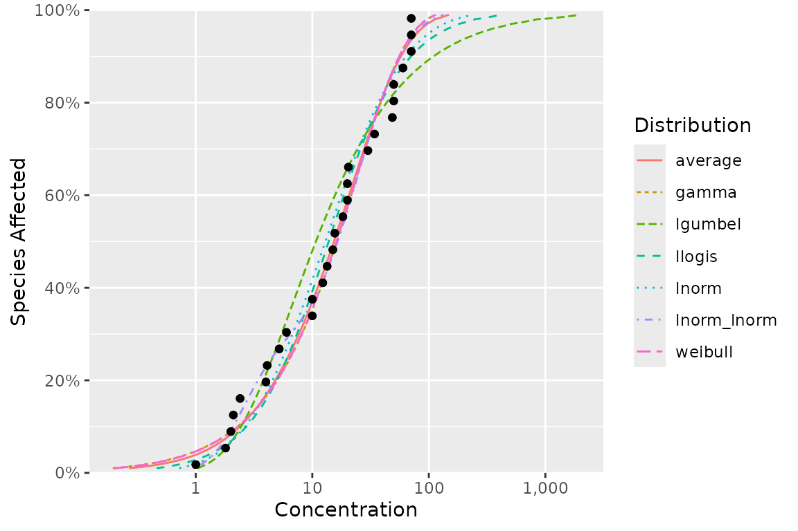

How can I plot the model averaged fit and the individual fits?
library(ssdtools)
dist <- ssd_fit_dists(ssddata::ccme_boron)
ssd_plot_cdf(dist, average = NA)
How can I include mathematical expressions in the x-axis label when
using ssd_plot()?
library(ssdtools)
ssd_plot(ssddata::ccme_boron, ssdtools::boron_pred, label = "Species", shape = "Group") +
ggplot2::scale_x_continuous(latex2exp::TeX("Boron $(\\mu g$/L)$"), breaks = c(1, 10, 100, 1000, 10000))Licensing
Copyright 2015-2023 Province of British Columbia
Copyright 2021 Environment and Climate Change Canada
Copyright 2023-2024 Australian Government Department of Climate Change,
Energy, the Environment and Water
The documentation is released under the CC BY 4.0 License
The code is released under the Apache License 2.0